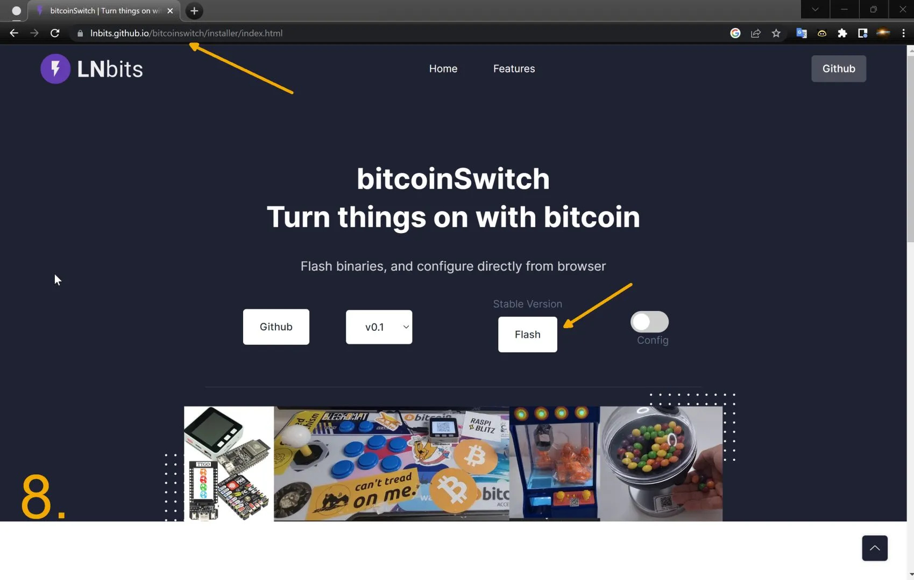
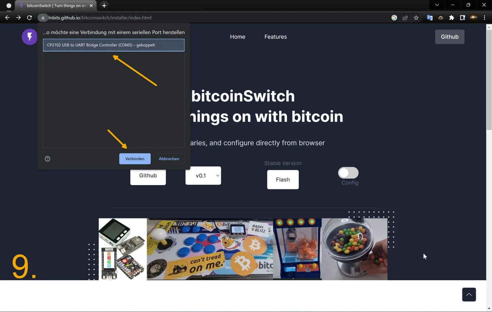
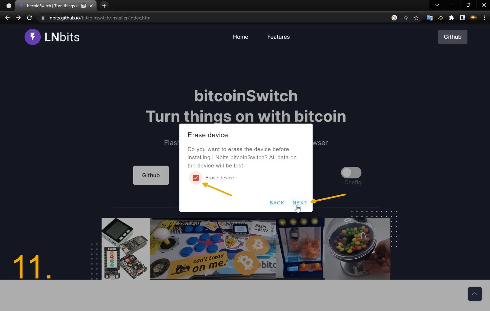

candymachine workshop
lnurldevice, bitcoinswitch, lnbits
🍬
erstellt von dni, thanks to ereignishorizont

Link: https://candy.600.wtf
Fragen: https://github.com/dni/candymachine-workshop/issues
Blockzeit: 774919

Overview
- Grundlagen
- LNbits Wallet / LNURLdevice erstellen
- bitcoinswitch installiern mit webinstaller
- bitcoinswitch in Candymachine einbauen
bitcoinswitch


Sachen einschalten via Lightning
Elektronik

thanks to ereignishorizont.xyz
Ablauf
- bitcoinswitch verbindet sich via WLAN auf LNbits Server.
- LNbits Server erstellt Lightning Invoices via LNURL Link.
- Invoice wird bezahlt, LNbits Server sendet per Websocket ein Signal an den bitcoinswitch
- bitcoinswitch schaltet Relay ein
LNbits
Links zu LNbits Instanzen
Wallet erstellen

Manage Extensions

LNURLdevice Extension aktivieren

LNURLdevice erstellen

LNURLdevice konfiguriern
GPIO pin 22!

LNURLdevice string anzeigen

LNURL anzeigen

bitcoinswitch installieren
https://lnbits.github.io/bitcoinswitch/installer/index.html
ESP32 flashen
USB Webserial verbinden
Firmware installieren

ESP32 formatieren
Installationsprozess

Logs